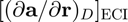
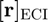
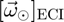
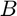
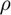
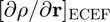

dadX_drag
Partial derivatives of drag acceleration with respect to position and inertial velocity, resolved in the ECI frame.
Back to Aerospace Simulation Toolbox Contents.
Contents
Syntax
[dadr_D,dadv_D] = dadX_drag(r_eci,v_eci,w_eci,B,rho,drhodr,R_ecef2eci)
Description
[dadr_D,dadv_D] = dadX_drag(r_eci,v_eci,w_eci,B,rho,drhodr,R_ecef2eci) determines the partial derivatives of the drag acceleration with respect to position () and inertial velocity () resolved in the ECI frame given the position (), inertial velocity (), and Earth angular velocity resolved () resolved in the ECI frame, the ballistic coefficient (), the atmospheric mass density (), the partial derivative of atmospheric mass density with respect to position () resolved in the ECEF frame, and the rotation matrix from the ECEF frame to the ECI frame ().
Input/Output Parameters
| Variable | Symbol | Description | Format | Units | |
| Input | r_eci | position resolved in ECI frame | 3×1 double |
m | |
| v_eci | inertial velocity resolved in ECI frame | 3×1 double |
m/s | ||
| w_eci | Earth angular velocity resolved in ECI frame frame | 3×1 double |
rad/s | ||
| B | ballistic coefficient | 1×1 double |
m2/kg | ||
| rho | atmospheric mass density | 1×1 double |
kg/m3 | ||
| drhodr | partial derivative of atmospheric mass density with respect to position resolved in the ECEF frame | 3×1 double |
kg/m4 | ||
| R_ecef2eci | rotation matrix from ECEF frame to ECI frame | 3×3 double |
- | ||
| Output | dadr_D | partial derivative of drag acceleration with respect to position | 3×3 double |
s-2 | |
| dadv_D | partial derivative of drag acceleration with respect to inertial velocity | 3×3 double |
s-1 |